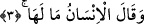
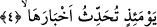

mümkün iken, “arz” kelimesinin tekrar edilmesi yeryüzünün ağırlıklarını çıkarması,
onun bazı bölümleri için söz konusu olduğundandır. İşte bu dikkate alınarak, zamir
yerine arz kelimesi getirilmiştir.
Âyet-i kerimede ki “eskâl” kelimesi “sikal” in çoğulu olup yerin hazineleri ve
toprakta yatan ölüler anlamına gelir. “Sekal” ise yolcunun yanında bulunan eşya ve
hizmetleri anlamındadır.
Bütün bu açıklamaların ardından âyet-i kerimeye mânâ vermek gerekirse şöyle
diyebiliriz: Kıyamet alâmetlerinden olan sûra ilk kez üfürüldüğü zaman olduğu gibi, yer
içinde bulunan saklı define ve hazinelerini dışarı çıkaracak, ikinci üfürülüşün sarsıntısı
esnasında da içerisinde bulunan ölüleri dışarı çıkaracaktır.
Bir rivâyette şu ifâdeler yer alır: Yeryüzü ciğer-parelerini, altından yapılmış bir
sütun gibi dışarı kusar. Kâtil gelir ve “ben bunun uğruna katıl oldum” der.
Akrabaları ile ilişkisini kesen kişi gelir ve “ben bunun uğruna akrabalarımla ilişkimi
kestim” der. Hırsız gelir, “Benim elim bunun yüzünden kesildi.” der. Sonra diğer
insanları da çağrırlar, ancak ondan hiçbir şey alamazlar.”
Bu hadis-i şerifte, “ciğer-pare” deyimi geçti. Bununla kasdedilen, yeryüzü içinde
saklı olan hazinelerin dışarı çıkmasıdır. “Yeryüzünün kusması” demek, o hazineleri
dışarı çıkarması demektir.
Âyette yer alan “eskâl” kelimesine, “sekalân” yâni insan ve cin topluluğu dâhildir. Bu
da bize cinlerin de insanlar gibi ölünce toprağa gömüldüklerine işâret etmektedir.
3. Ve insan «Ne oluyor buna!» dediği vakit,
“İnsan” yâni insanoğlunun tüm fertleri... Çünkü o günkü korku ortamı bütün insan
fertlerini kaplayıp saracaktır. Dehşet olanca ağırlığı ile herkesi bürüyüp etkisi altına
alacaktır. Şaşkınlık alabildiğine herkesin ortak duygusu olacaktır.
“Ne oluyor buna dediği zaman,” Yani insan, ne oluyor şu yeryüzüne, bu kez neden
böyle şiddetle sarsılıyor ve neden içindeki ağırlıkları dışarı çıkarıyor? dediği zaman...
İnsanın bu soruyu sorması, karşılaştığı korkunç durumu çok büyük bir şey olarak
görmesinden, hiçbir kulağın duymadığı, hiçbir dilin ifâde etmediği dehşet verici
durumları görüp hayrete düşmesinden dolayıdır. Ancak mü’min düştüğü bu dehşetten
ayılınca, Kur’ân’ın ifâdesi ile “İşte Rahman olan Allah’ın vaâdettiği budur.
Peygamberler doğru söylemişlerdi.” (Yâsin, 36/52) der. Kâfire gelince, Kur’ân’ın
ifâdesi ile o da: “Yattığımız yerden bizi kim kaldırdı?” (Yâsin, 36/52) der.